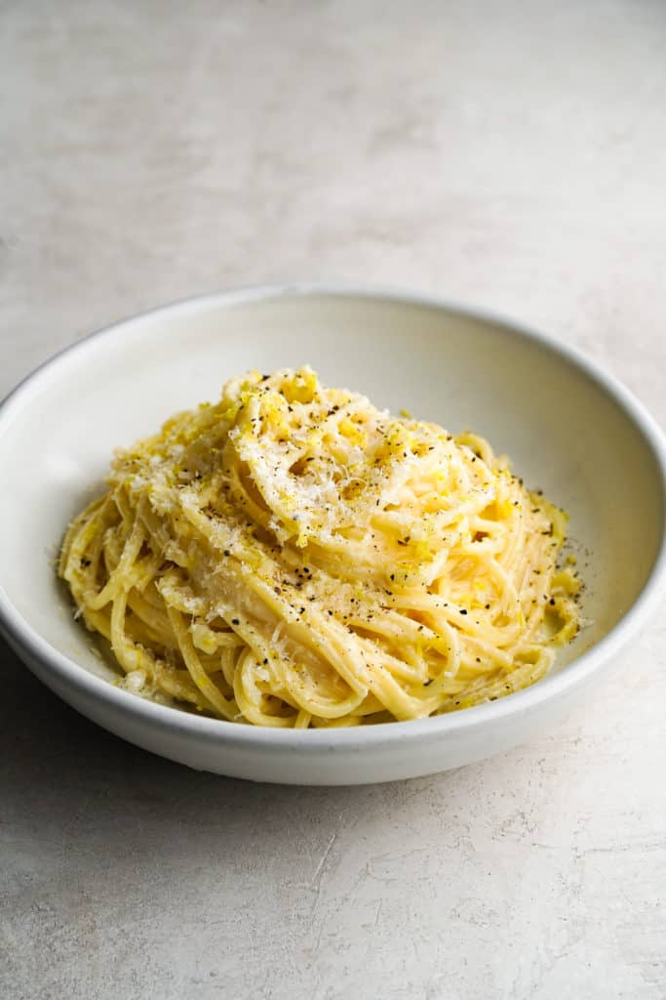

The italian flavour of summer!
Light and fresh is this dish inviting you to enjoy a Day in the sun.
This can go alone as star of the show or be combined with fish or asparagus for example. Be creative and do not forget the vino blanco.
Ingredients
- one pack of quality pasta (long and thin. Linguine for example.)
- some butter
- sea salt
- pepper (and please freshly grinded)
- parsley (The green, living plant. No dried stuff!)
- one lemon (obyiously)
- some parmigiano reggiano
- a bit of cream
- some garlic if you like it. Not too much.
Instructions
- Boil some water, just enough, and season to taste with salt.
- Add your pasta to the boiling water.
- Preheat a pan and place a generous amount of butter in it. Only melt it. Do not apply to much heat.
- Peel the lemon with a rub and add the peel to the melted butter. Also add the chopped garlic. Give both a minute or two and add the cream.
- Just before your pasta becomes al dente, place it in the sauce and finish it there.
- Season to taste with pepper and for a more salty flavor, add some pasta water. If you want a more lemony taste, add some (surprise!!!) lemon juice.
- Place the pasta on a plate and garnish with parsley and parmigiano.
Return to top
Return to main page